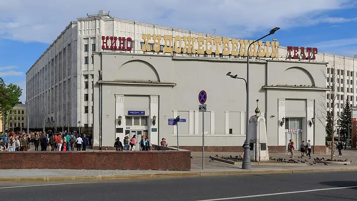

Фото: A.Savin, Free Art License · Wikimedia Commons
Кинотеатр · ЦАО
Художественный
Старейший кинотеатр Москвы на Арбатской площади после реставрации.
- ₽ · до 1 500 ₽ на человека
- в 2 планах
Позвать сюда: ХудожественныйОткрыть в каталоге: ХудожественныйМаршрут до места: Художественный
Адрес и детали
- Адрес
- Арбатская пл., 14, стр. 1
Открыть на Яндекс Картах (в новой вкладке) - Метро
- м. Арбатская
- Округ
- Центр (ЦАО)
- Цена
- до 1 500 ₽ на человека
- Проверено
- работает — проверили в октябре 2026
Планы с этим местом 2
- Дом Гоголя · Музей · м. Арбатская
- 4 минуты пешкомХудожественный · Кинотеатр
Дом, где Гоголь сжёг второй том «Мёртвых душ», и вечерний сеанс в старейшем кинотеатре Москвы.
Открыть план: Вий, Гоголь и киноПозвать сюда: Вий, Гоголь и кино
Фото: Shakko, CC BY-SA 4.0 · Wikimedia Commons
- Художественный · Кинотеатр · м. Арбатская
- 14 минут пешкомТэму · Панорамный ресторан
Фильм в старейшем кинотеатре Москвы, а после — ужин на двенадцатом этаже над Арбатом.
Открыть план: Кино в Художественном и ужин с видомПозвать сюда: Кино в Художественном и ужин с видом
Фото: A.Savin, Free Art License · Wikimedia Commons


Похожие рядом

Что ещё рядом

Как позвать
- Выбери план, место или событие — в карточке адрес, цены и маршрут в Яндекс Картах.
- Нажми «Позвать сюда» — соберётся приглашение-игра для свидания или голосование для компании.
- Отправь ссылку в любой мессенджер: тебе ответят, а компания отметит, куда и когда может. Бесплатно и без регистрации.